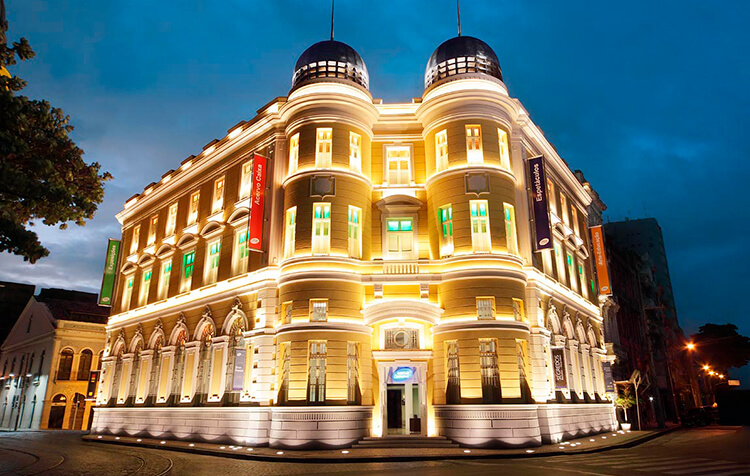

Museus do Recife Antigo
Nos últimos anos, os museus também se multiplicaram na região do Recife Antigo. Um dos prédios mais clássicos do bairro, o casarão em frente à Praça do Marco Zero, abriga a Caixa Cultural.
Outra opção é o Museu Cais do Sertão, que emociona todo mundo, especialmente a gente que tem um pé lá no sertão e hoje só anda em Pernambuco de passagem. Também dá pra visitar a Embaixada de Pernambuco dos Bonecos Gigantes de Olinda e o meu museu favorito do Recife Antigo, o Museu Paço do Frevo.